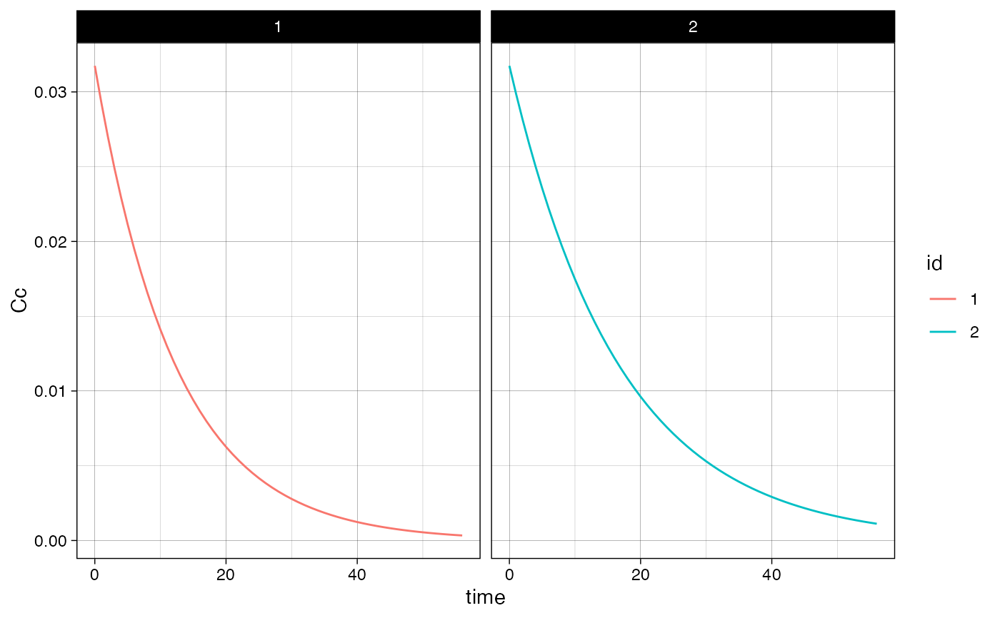

Usage
plot_sr_tc(
sro = NULL,
dvcols = NULL,
fpage = 1,
fcol = "id",
error_msgs = NULL,
ylog = TRUE,
ylab_str = "Output",
xlab_str = "Time",
post_proc = "fig = fig + ggplot2::theme_light()",
fncol = 4,
fnrow = 2
)Arguments
- sro
Output of 'simulate_rules()'.
- dvcols
Character vector of dependent variables.
- fpage
If facets are selected and multiple pages are generated then this indcates the page to return.
- fcol
Name of column to facet by or
NULLto disable faceting ("id").- error_msgs
Named list with error messages to overwrite (
NULL- ylog
Boolean to enable log10 scaling of the y-axis (
TRUE- ylab_str
Label for the y-axis (
"Output"- xlab_str
Label for the x-axis (
"Output"- post_proc
Character object with post processing post-processing code for the figure object named
figinternall ("fig = fig + theme_light()")- fncol
Number of columns in faceted output.
- fnrow
Number of rows in faceted output.
Value
List with the followin1g elements:
isgood: Return status of the function.
msgs: Error or warning messages if any issues were encountered.
npages: Total number of pages using the current configuration.
error_msgs: List of error messages used.
dsp: Intermediate dataset generated from
sroto plot in ggplot.fig: Figure generated.
Details
For a detailed examples see vignette("clinical_trial_simulation", package = "ruminate").
Examples
library(formods)
library(ggplot2)
# For more information see the Clinical Trial Simulation vignette:
# https://ruminate.ubiquity.tools/articles/clinical_trial_simulation.html
# None of this will work if rxode2 isn't installed:
if(is_installed("rxode2")){
library(rxode2)
set.seed(8675309)
rxSetSeed(8675309)
my_model = function ()
{
description <- "One compartment PK model with linear clearance using differential equations"
ini({
lka <- 0.45
label("Absorption rate (Ka)")
lcl <- 1
label("Clearance (CL)")
lvc <- 3.45
label("Central volume of distribution (V)")
propSd <- c(0, 0.5)
label("Proportional residual error (fraction)")
etalcl ~ 0.1
})
model({
ka <- exp(lka)
cl <- exp(lcl + etalcl)
vc <- exp(lvc)
kel <- cl/vc
d/dt(depot) <- -ka * depot
d/dt(central) <- ka * depot - kel * central
Cc <- central/vc
Cc ~ prop(propSd)
})
}
# This creates an rxode2 object
object = rxode(my_model)
# If you want details about the parameters, states, etc
# in the model you can use this:
rxdetails = fetch_rxinfo(object)
rxdetails$elements
# Next we will create subjects. To do that we need to
# specify information about covariates:
nsub = 2
covs = list(
WT = list(type = "continuous",
sampling = "log-normal",
values = c(70, .15))
)
subs = mk_subjects(object = object,
nsub = nsub,
covs = covs)
head(subs$subjects)
rules = list(
dose = list(
condition = "TRUE",
action = list(
type = "dose",
state = "central",
values = "c(1)",
times = "c(0)",
durations = "c(0)")
)
)
# We evaulate the rules for dosing at time 0
eval_times = 0
# Stop 2 months after the last dose
output_times = seq(0, 56, 1)
# This runs the rule-based simulations
simres =
simulate_rules(
object = object,
subjects = subs[["subjects"]],
eval_times = eval_times,
output_times = output_times,
rules = rules)
# First subject data:
sub_1 = simres$simall[simres$simall$id == 1, ]
# First subjects events
evall = as.data.frame(simres$evall)
ev_sub_1 = evall[evall$id ==1, ]
# All of the simulation data
simall = simres$simall
simall$id = as.factor(simall$id)
# Timecourse
psim =
plot_sr_tc(
sro = simres,
dvcols = "Cc")
psim$fig
# Events
pev =
plot_sr_ev(
sro = simres,
ylog = FALSE)
pev$fig
}
#>
#>
#>
#>
#>
#>
#> Warning: multi-subject simulation without without 'omega'
#>
#>
#> Warning: multi-subject simulation without without 'omega'
#> `geom_line()`: Each group consists of only one observation.
#> ℹ Do you need to adjust the group aesthetic?
#> `geom_line()`: Each group consists of only one observation.
#> ℹ Do you need to adjust the group aesthetic?
